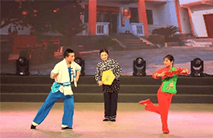

重庆非物质文化遗产

打铁花是重庆非遗，起源于明代炼铁技艺。表演时铁水被击打至高空绽放火花，象征驱邪祈福，需高超技艺，传承至今。
打铁花

重庆龙舞（铜梁龙舞）是国家级非遗，起源于唐宋，盛行于明清。以龙为道具，舞姿雄壮，象征吉祥喜庆，是重庆重要的民俗文化。
龙舞


重庆唢呐是巴渝传统吹奏乐器，音色高亢嘹亮，常用于婚丧嫁娶、节庆活动，传承百年，富有地方特色，是重 庆民间艺术的重要代表。
唢呐文化
重庆灯戏，又称梁山灯戏，是重庆市梁平区的传统戏剧，起源于明代正德年间，以“嬉笑闹”和“扭拽跳”为特色，常在春节、灯节等民俗活动中演出。
灯戏




重庆美食
重庆景点
重庆旅游

English